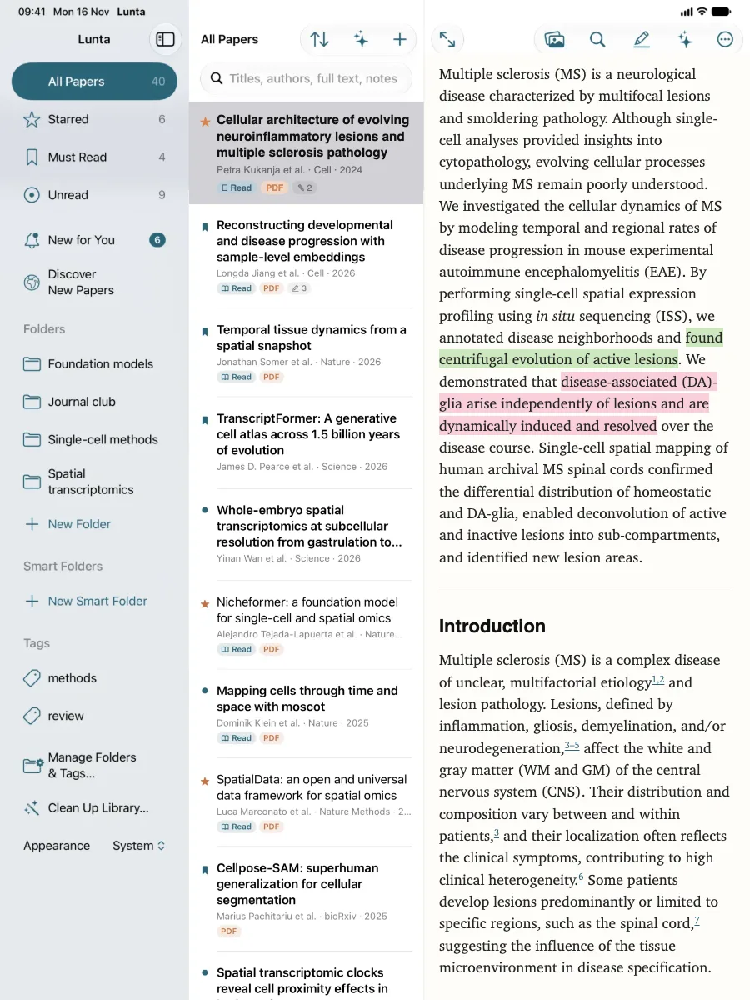
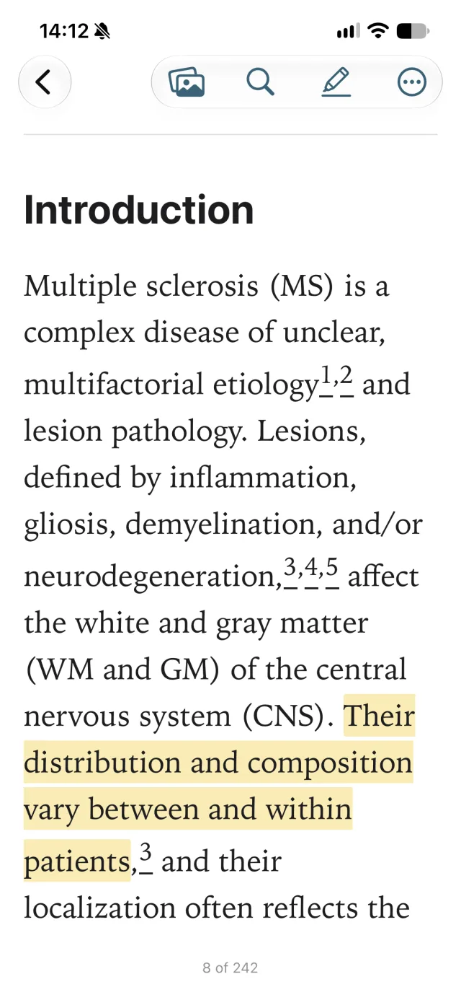
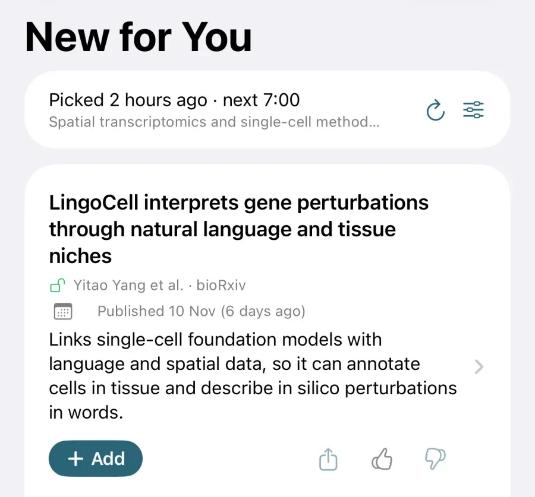

Read
Figures, citations and equations that work on a phone
Tap a figure to see it large with its caption, and a citation to see the reference and add it to your library.
Figure from Kukanja et al., Cell 2024, CC BY 4.0
Lunta turns every paper into a clean reading view that fits your screen, keeps your highlights in sync, and cites in Word, Google Docs and LaTeX. On Mac, iPhone, iPad, Android, Windows and Linux, free and open source.


From PDF to reading view
Lunta builds a reading view from each paper's best source: the open XML version, arXiv, the journal's web page, or the PDF itself. Text that fits the screen, figures you can open, citations you can tap. The PDF stays one tap away.

Multiple sclerosis (MS) is a complex disease of unclear, multifactorial etiology and lesion pathology. Lesions, defined by inflammation, gliosis, demyelination, and/or neurodegeneration, affect the white and gray matter (WM and GM) of the central nervous system (CNS). Their distribution and composition vary between and within patients, and their localization often reflects the clinical symptoms, contributing to high clinical heterogeneity.
Some patients develop lesions predominantly or limited to specific regions, such as the spinal cord, suggesting the influence of the tissue microenvironment in disease specification. Traditional immunohistochemical approaches stratify lesions into different categories, e.g., active, mixed active/inactive, and inactive with or without ongoing demyelination or remyelination. Nevertheless, our understanding of MS lesions and cytopathology relies on tissue collected almost invariably at the end stages of the disease, hindering the exploration of disease evolution. Focal inflammation, driven by peripheral immune infiltration, is thought to govern MS neuropathology and the disease course.
Measured on 200 open-access papers from PubMed Central. More numbers How it was measured
The paper shown on this page: Kukanja et al., “Cellular architecture of evolving neuroinflammatory lesions and multiple sclerosis pathology”, Cell 187, 1990–2009 (2024), doi:10.1016/j.cell.2024.02.030, CC BY 4.0.
Features
Read
Tap a figure to see it large with its caption, and a citation to see the reference and add it to your library.
Figure from Kukanja et al., Cell 2024, CC BY 4.0
Highlight
Four colors and notes, in the reading view or the PDF. They sync everywhere and find their place again when a paper gets a better reading view.
We demonstrated that disease-associated (DA)-glia arise independently of lesions and are dynamically induced and resolved over the disease course.
Key finding: DA-glia appear independently of demyelinating lesions — cite in Discussion.
New for You
Picks that match your research, with why each one is there.

Cite
Citations and a reference list that keeps itself in order, in 12 built-in styles or any of about 10,000 journal styles.
Spatial omics maps cells in their tissue context1,2.
Also: papers read aloud, on-device AI, your library in your own cloud, the browser extension, AI agents, and switching from Zotero, Mendeley, ReadCube or EndNote.
All featuresPlatforms
A native app on each platform, on one shared core. A Mac keeps iCloud Drive and Google Drive in sync, so one library can span all of them.
Multiple sclerosis (MS) is a complex disease of unclear, multifactorial etiology and lesion pathology. Lesions, defined by inflammation, gliosis, demyelination, and/or neurodegeneration, affect the white and gray matter (WM and GM) of the central nervous system (CNS). Their distribution and composition vary between and within patients, and their localization often reflects the clinical symptoms, contributing to high clinical heterogeneity.
Some patients develop lesions predominantly or limited to specific regions, such as the spinal cord, suggesting the influence of the tissue microenvironment in disease specification. Traditional immunohistochemical approaches stratify lesions into different categories, e.g., active, mixed active/inactive, and inactive with or without ongoing demyelination or remyelination. Nevertheless, our understanding of MS lesions and cytopathology relies on tissue collected almost invariably at the end stages of the disease, hindering the exploration of disease evolution. Focal inflammation, driven by peripheral immune infiltration, is thought to govern MS neuropathology and the disease course.
Which file do I need, and how do I install it? · Compare every feature
Privacy
Your papers, highlights and notes are yours. Lunta looks papers up in public scholarly services, and sends nothing about you anywhere.
Free on every platform. Bring your library from another reference manager, or start with a single DOI.